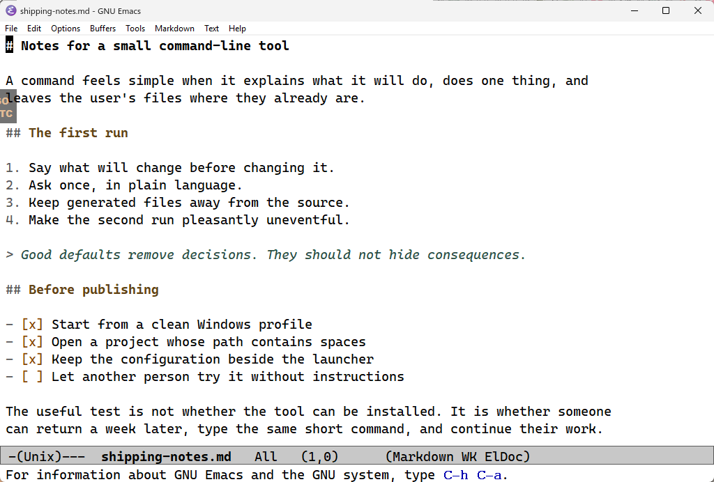
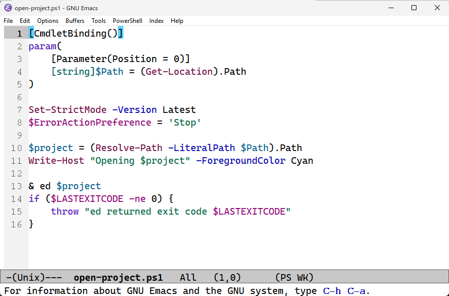
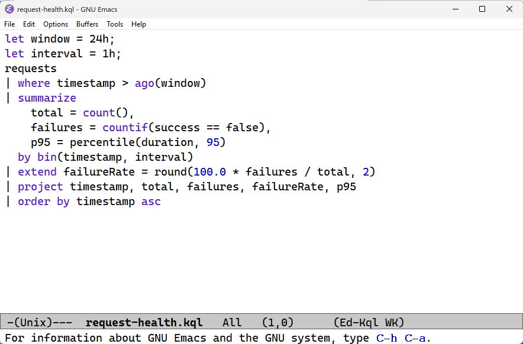
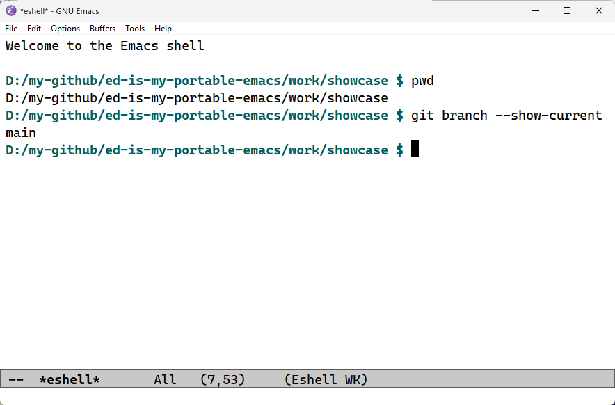

Portable Emacs for Windows
An editor you can take with you.
ed keeps an Emacs launcher and a practical configuration in one repository. Run it in the folder where you are already working, with the same tracked configuration on each Windows machine you use.
C:\work\project> ed
01 / What it changes
Less setup to reconstruct.
- The setup stays visible
- The launcher and Emacs configuration live beside one another. Downloaded archives, the portable runtime, packages, and generated state stay out of the tracked source.
- It opens where you are
-
Run
edin a directory, or pass it a file. A directory starts an Emacs shell there; a file opens directly. - It remains Emacs
- ed adds a light theme, completion, file modes for everyday work, Magit, and a toggled terminal pane. Emacs key bindings remain, and a language server never starts unless you request it.
02 / At work
Writing and code share the same room.
Notes, scripts, source, and data files can share one session without turning every buffer into an IDE.


Markdown · Emacs Lisp · C# · Scala · PowerShell · JSON · YAML · KQL

03 / Try it
Clone, add one command, open a folder.
Clone the repository on Windows and run the PATH helper from its root:
git clone https://github.com/dzharii/ed-is-my-portable-emacs.git
cd ed-is-my-portable-emacs
add-to-path.cmdThe helper shows the current-user PATH change and asks before writing it. Open a new terminal, move to a project, and run:
edIf no usable Emacs is available, ed explains the GNU Emacs 30.2 download and asks before starting it. Declining starts no download and installs nothing.